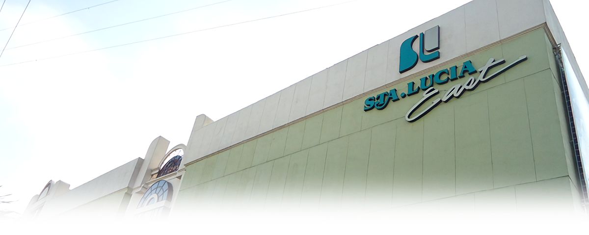

About Us
In 1991, certain of the market potentials in the east side of the metropolis and driven by the desire to diversify, Sta. Lucia East Realty and Development, Inc. (SLRDI) built Phase 1 of the first ever, soon-to-be center of a one-stop shopping and recreation haven in Rizal - the Sta. Lucia East Grand Mall (SLEGM).
The multi-level structure built at the corner of Marcos Highway and Imelda Avenue, represented SLRDI’s first venture into retail, merchandising and shopping industry.
Phase 1 houses the first well-equipped theaters in town, reputable food chains (i.e. Shakeys, Jollibee and Chowking) and well-known fashion boutiques (i.e. Pink soda, Petit Monde, Artwork). The venture elicited overwhelming patronage and undoubtedly boosted the commercial activities in Rizal and the nearby municipalities.
Two years later, Phase II was formally opened offering better facilities, more specialty stores, service centers, additional cinemas, a 32-lane bowling center, an entertainment arcade (GWOF) and a junior department store.
The resounding success in sales and operations prepared SLEGM to join the ranks of other retail giants. On May 18, 1998, Phase III was unveiled which offered bigger spaces and more comprehensive shopping and entertainment facilities that can be compared with the best in Asia. The expansion paved way to a 22,000 square meter, three-level, full-line Department Store that houses the leading brands in the retail industry; more upscale stores and restaurants; and the many firsts in shopping and leisure - a 32-lane Brunswick Bowling Center, state-of-the-art cinemas equipped with Sony Digital Sound System and a 10-meter high ceiling entertainment center called World of Fun where children of all ages can play, party and socialize.
Phase III also introduced the 7,000 square meter supermarket with new point of sales (POS) terminals and spacious aisles for buying convenience. Added amenities include the construction of walkalator, scenic elevators, and a multi-level parking facility. Home Gallery opened its door with the finest selection of charming but functional décor, furniture and appliances for people who want real home improvement. Planet Toys kicked off with more famous brands to the delight of kids, toddlers and even parents.
Since then, the mall has grown and matured through the years. In 2005, Phase III cinemas were renovated and became known as the Theatre Zone. Theatre Zone brings movie experience a step higher with widest cinema screens, numerous reclining love seats, and Dolby Digital EX surround system. There is no escaping the growing popularity of various tech trends, thus in 2007, Phase III was declared as a WIFI zone providing free internet access to all its patrons.
Today, SLEGM has become the destination of choice among shoppers of all ages and socio-economic status. It has spurred economic activities in the area and has contributed to the welfare of the community by providing business opportunities to the local manufacturers and retailers. It has been around for 17 years and intends to be for many more years despite threats of competition.
Indeed, the vision that was lives on. It never stops. It just gets better.